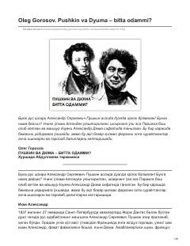

PVPushkin va Dyuma bir shaxs bo'lishi mumkinligi haqidagi qiziqarli tarixiy farazlar tahlili.
Ushbu asarda rus shoiri Aleksandr Pushkin va fransuz yozuvchisi Aleksandr Dyuma aslida bitta shaxs bo'lishi mumkinligi haqidagi qiziqarli va bahsli farazlar tahlil qilinadi. Muallif ikki ijodkorning tashqi ko'rinishi, xarakteri va hayot yo'lidagi o'xshashliklarni keltirib o'tgan holda, shoirning o'limi bilan bog'liq sirli voqealarni o'rganadi.